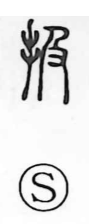

扱

Kun: atsukau, toru, hasamu | On: kyu
to handle ・ to treat ・ to manage
Explanation
扱 is a phono-semantic character: the hand element (扌) gives the sphere of action, while 及 serves as the phonetic. In archaic form 及 depicts hands reaching from behind to catch someone ahead, hence the sense of reaching. Joined to the hand radical, the character comes to mean reaching out with the hands to get hold of something—actions such as taking in, grasping, holding something firmly between the hands, or drawing it through the hands (as in the verb shigoku). In Japanese it is read atsukau and is widely used for handling or treatment, as seen in words like toriatsukai and kyakuatsukai.